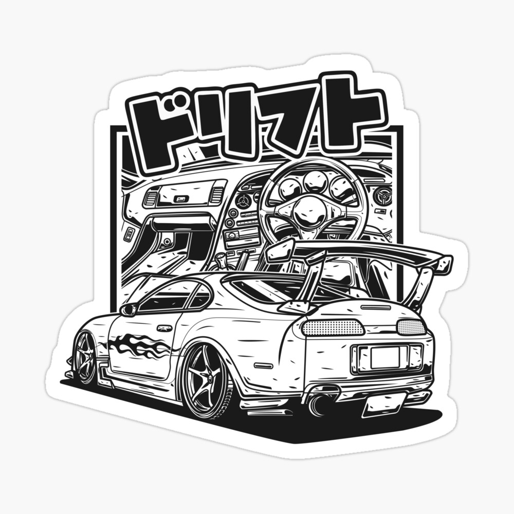

The Toyota Supra is a legendary Japanese sports car with a rich history. Here's some key information about the
Toyota Supra:
- The Toyota Supra is renowned for its powerful inline-six engines and rear-wheel-drive setup, making it a favorite among car enthusiasts.
- It was first introduced in the late 1970s and went through several generations, each with its unique characteristics and improvements.
- The Supra features a sleek and aerodynamic design, with a distinctive long hood and short rear deck.
- Enthusiasts love the Supra for its combination of performance and style, making it an iconic sports car.
- It has a strong presence in motorsports, including racing and drifting competitions.
- After a hiatus, the Supra returned in the 2020s, reigniting its legacy as a high-performance sports car.